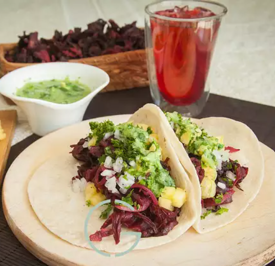

Description
A unique and vegan taco idea!
This recipe comes from here.
Don't be overwhelmed! This recipe is easy and quick.
Ingredients
- 8 oz hibiscus flowers
- 1 tbls olive oil
- 1 chopped onion
- 2 cloves garlic, minced
- salt and pepper to taste
Directions
- Rinse hibiscus very well to make sure all dust is removed. Place clean hibiscus in a pot over medium heat, cover with water, and boil for 10 minutes. Remove hibiscus from heat and allow to steep for at least 2 hours, until hibiscus is very soft. Drain well.
- Heat oil in a large skillet over medium heat and cook 1 onion and 2 cloves garlic until soft and translucent, about 2 minutes. Stir in drained hibiscus and season with salt and pepper. Cook for 5 minutes, stirring constantly, until hibiscus turns a deep red color.
- Combine tomatillos, avocado, 1/4 onion, serrano peppers, 1 clove garlic, and 2 tablespoons cilantro; blend until smooth. Season salsa verde with salt.
- Warm corn tortillas in a skillet. Divide hibiscus mixture amongst tortillas and top with pineapple, onion, and cilantro. Serve with salsa verde and lime.